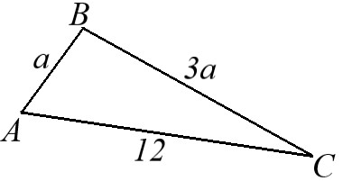

32. Если 1 ⁄ x = 0,5; то x =
33. Сумма всех целых чисел, находящихся на числовой прямой между числами -2,3 и 3,3 равна

34. Если в треугольнике ABC, приведенном на рисунке выше,
AC = 12, AB = a, BC = 3a, то чему из нижеприведенного равно a?
35. Если для всех чисел x функция f(x) задана
формулой f(x) = |x2 - 50|, то f(-5) =
36. Если a, b, c - последовательные целые числа,
то что из нижеприведенного верно?
I. a ⋅ b чётное
II. b ⋅ c нечётное
III. a + b + c делится на три
37. 14,3 : 10 + 1,057 ⋅ 10 =
38. Если y + yz = 18 и z + 1 = 6,
то y =

39. Если посылку Александра весом
14 килограммов 200 граммов упаковали на
почте в коробку с размерами в см: 40 х 50 х 30,
то сколько сомов заплатил Александр за все услуги автопочты?
40. Если Адинай отправила одну посылку
весом 1 килограмм 800 граммов, а другую
весом 4 килограмма 300 граммов и отказалась от услуги упаковщика,
то сколько сомов заплатила Адинай за услуги автопочты?
41. 3 ⋅ √2 ⋅ √5 ⋅ 4 ⋅ √10 =

42. Если в прямоугольной системе координат Oxy,
приведённой на рисунке выше, указаны координаты точек O, B и C,
то площадь внутренней области треугольника OBC равна
43. Если цена одного килограмма изюма a сомов,
то по какому из нижеприведённых выражений можно определить, сколько сомов надо заплатить
за 400 граммов изюма?

44. Если в треугольнике ABC,
изображенном на рисунке выше, AB = BC то α =?
45. Цена старого автомобиля определяется по формуле
y = (0,8)n ⋅ c, где
c - стоимость нового автомобиля в сомах,
n - количество полных лет эксплуатации автомобиля.
Если цена нового автомобиля 500 000 сомов, то сколько сомов будет стоить этот
автомобиль после двух лет эксплуатации?

47. На рисунке, приведенном выше, AK + KB + AB + BC.
Если периметр треугольника ABK равен 45, а периметр треугольника ABC равен 40, то AC =
48. Если x и y - целые положительные числа и
x + y = 9, то чему из нижеприведенного НЕ МОЖЕТ БЫТЬ равно значение x⁄y?

49. Если на рисунке, приведенном выше,
O - центр круга, то φ =
50. В вазе лежат яблоки, груши и персики. Всего 14 штук.
Груш в 2 раза больше, чем яблок, а яблок меньше, чем персиков. Если больше всего в вазе груш, то сколько
в вазе персиков?
51. Если вычислить значение x = 22013 ⋅ 52016,
то сумма цифр в числе x будет равна
52. При производстве крупы из зерна масса крупы
составляет 86 процентов, остальные отходы. Если получилось 7 тонн отходов, то сколько тонн крупы получено?
53. Если среднее арифметическое чисел 3 и z равно 5,
среднее арифметическое чисел 5 и t равно 7, то среднее арифметическое чисел z и t равно
54. Если 2k + 2k = b
и k ≠ 1, то b2 =
55. Если остаток от деления числа n на 5 равен 3, то остаток
от деления числа 3n на 5 равен

56. На рисунке, приведенном выше, окружность проходит
через вершины квадрата ABCD.
Если площадь внутренней области квадрата ABCD равна 4, то площадь круга равна
57. Для любых двух чисел a и b
новая математическая операция ⊗ определена как a ⊗ b = a2 - b.
Если 3 ⊗ x = 5, то x =
58. График какой из нижеприведённых функций в прямоугольной
системе координат Oxy проходит через точку с координатами (-2;1)?
59. За круглам столом сидят мужчины и женщина.
Никакие трое мужчин не сидят последовательно друг за другом, никакие две женщины не сидят рядом.
Если всего за столом 14 человек, то наименьшее количество женщин за этим столом равно

60. Куб ABCDA1B1C1D1
расположен в прямоугольной системе координат Axyz так, как показано на рисунке,
приведённом выше.
Если A(0;0;0), A1(0;0;6) и P - середина диагонали AC1 куба,
то точка P имеет координаты
Следующий